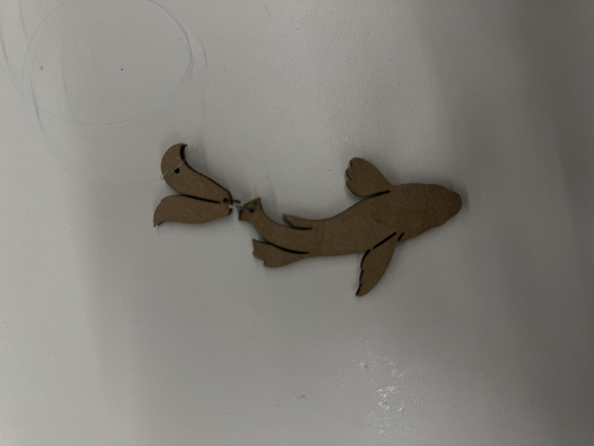
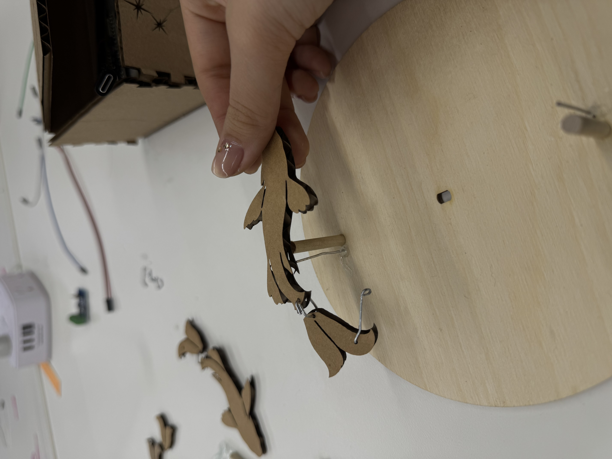
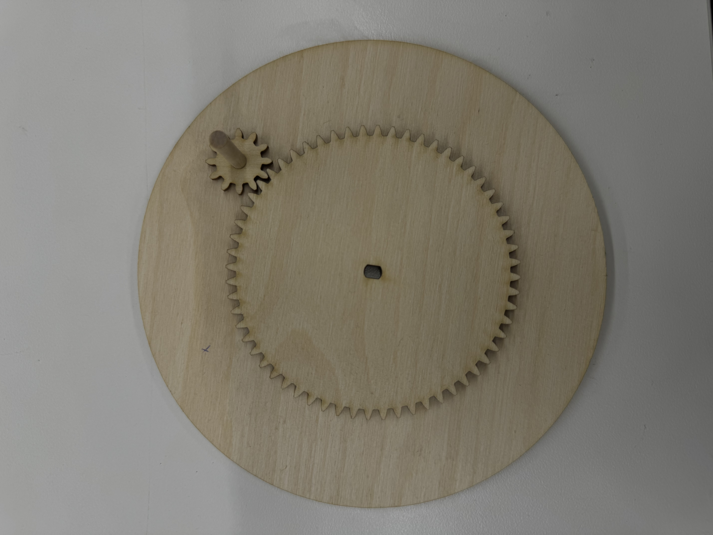
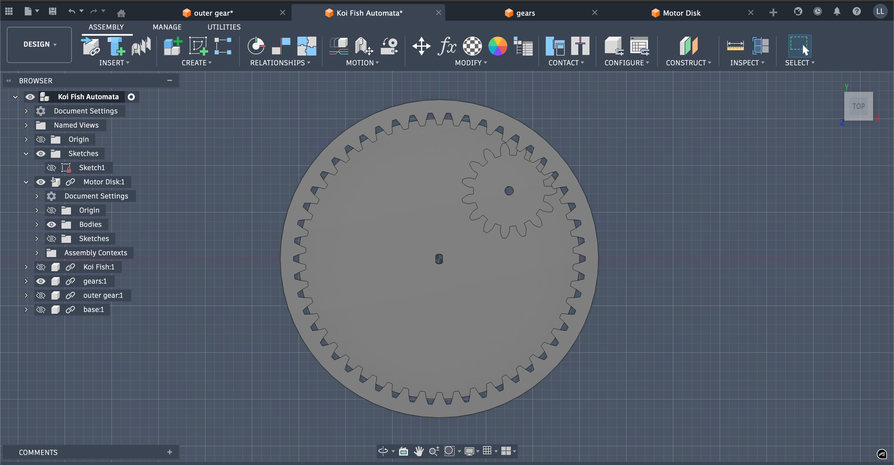
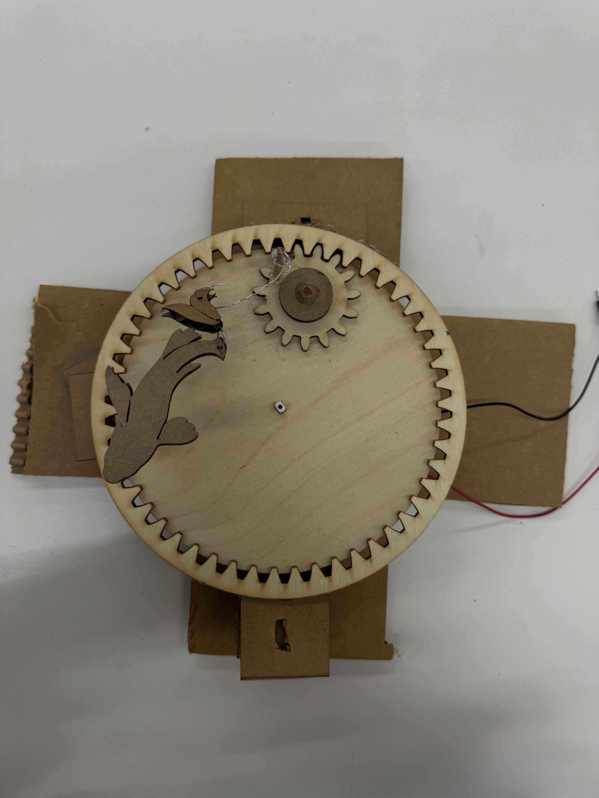

First Iteration
Design
After playing around with some of the mechanisms, I decided I wanted to make a koi fish pond with two fish spinning around in a circle. I wanted their tails to swish as they moved in a circle as well. The idea was to have a spinning disk with the two fish on it. The fish themselves would be two pieces: a body and tail. These two pieces would be connected by a hinge so that the tail could move freely from the body. I made a secondary hole for a freestanding pin that would be connected to the fish tail to make it move.


Trial and Error
I realized pretty quickly that this wouldn't work though. After that, I switched to a double gear system, where the big gear and the larger disk would be connected to the motor axle while the small gear was pushed by the large one. The fish would sit on the larger disk, with only the tail connection sitting on the smaller gear. This way, the tail would rotate (like in a 4-bar-linkage), independently from the body.

However, I forgot that the large gear would stay still relative to the disk.
After more iterations, I finally ended up with a type of planetary gear mechanism, with a stationary outer ring that had teeth on the inside. This would make the inner gear turn independently of the disk.

Throughout the process, I tweaked a lot of things. For one thing, I made a lot of changes in order to decrease fricton. Initially, I had a support piece that sat underneath the outer ring. However, upon testing, I realized that it created a lot of friction that made it hard for the motor to push the disk. Along with that, I changed the base so that it connected with the actual mechanism as little as possible. I only added support where absolutely necessary, balancing the disk or holding the motor still.
In addition, I messed with the tail connection a little. In the beginning, I connected the string to a rod that was glued onto the small gear. However, the string often got tangled, making it impossible to push the gear. After that, I changed to a metal loop connected to the gear, since i was hoping the loop gave the flexibility to stay untangled. When that didn't work, I changed to a metal loop that would loop onto a rod connected to the gear.
After many iterations, I finally got to my current kinetic sculpture.


Reflection
In the future, I would change the materials I use. During this project, I was often limited by the stock available, switching between cardboard and plywood. In addition, I only found thinner wire three-fourths of the way through. However, this thinner wire would've been better to make hinges, joints, and loops. My koi fish would've also benefitted from smaller wires, since they often rip from the larger paperclip wires.